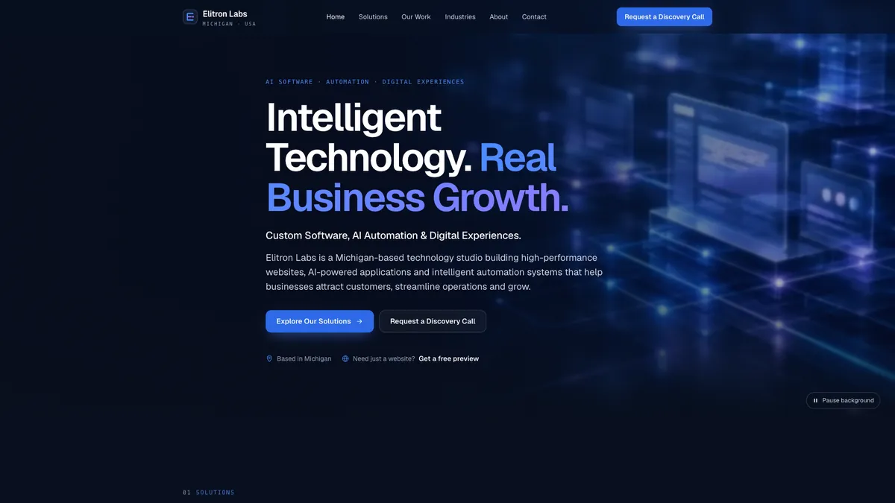
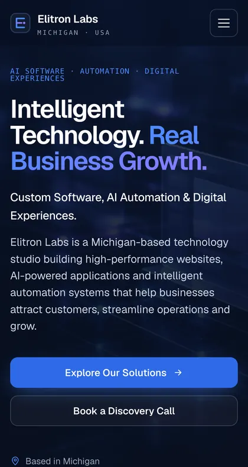

Our Work · Case study
The Elitron Labs website.
Our own website, rebuilt in October 2026 to explain what we do clearly, to perform well, and to show real functionality instead of describing it.
The problem
The previous site positioned Elitron Labs only as a local website agency and used emoji icons and placeholder visuals. Its contact form used a mailto: action, which depends on the visitor's email app and often silently fails, so inquiries could be lost without anyone knowing.
The solution
A full redesign on the existing static stack (no framework migration), with clear positioning across four services, a consistent design system, original generated imagery and video, an interactive automation demo, and a server-side lead endpoint that reports success only after an inquiry is actually delivered.
Features & technology
- Hand-built HTML, CSS and JavaScript; self-hosted Geist typeface
- Design tokens with WCAG-checked colour contrast
- Interactive five-step automation demo (runs in the browser on synthetic data)
- Vercel serverless function for lead intake: server-side validation, honeypot, timing check, rate limiting, formula-injection guard
- Delivery by email (Resend) or a signed HMAC webhook (e.g. n8n), with retries
- Strict Content-Security-Policy and security headers
- Automated tests for the intake logic (Node test runner)
- Reduced-motion and Save-Data aware video loading
Demonstration
You're using it. Try the automation demo or look at the two-path contact flow.


Verified results
Lab measurements taken on Vercel preview deployments with Chrome DevTools in October 2026. Lab numbers are not field data from real visitors. No business results (traffic, leads, revenue) are claimed here.
Project status
Live at elitronlabs.io and maintained by us. Lead delivery requires the site owner's email service key to be configured; until then the form shows direct email and phone details instead of losing the inquiry.
Want a website built like this?
We'll show you a free preview before you commit.